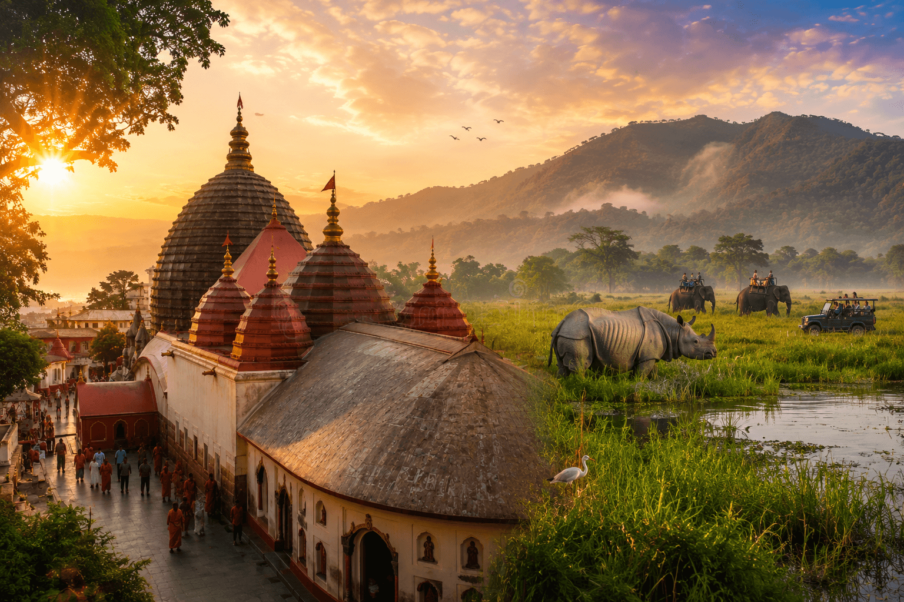

Kaziranga National Park, a UNESCO World Heritage Site in Assam, is home to two-thirds of the world’s greater one-horned rhinoceros population. Located just 4 hours by scenic highway from Guwahati Airport, it pairs effortlessly with Maa Kamakhya Temple darshan or a Meghalaya itinerary.
Best Time to Visit Kaziranga
- November to February: Crisp winter mornings, golden elephant grass, and migratory birds.
- March to April: Highest rhino & wild elephant sightings as wildlife gathers near wetlands.
- May to October: Park closes during Brahmaputra monsoon season.
Top Safari Ranges to Choose
- Central Range (Kohora): Most popular range with dense rhino sightings and iconic grasslands.
- Western Range (Bagori): Best for close-up rhino photography and Elephant Safari mornings.
- Eastern Range (Agaratoli): Quieter, scenic wetlands ideal for birdwatching and nature lovers.
- Burapahar Range: Lush forested foothills great for hoolock gibbons.

Jeep Safari vs Elephant Safari
- Elephant Safari (Early Morning 5:30 AM / 6:30 AM): Gets you remarkably close to rhinos grazing in misty grasslands (~1 hour).
- Jeep Safari (Morning 7:30 AM or Afternoon 1:30 PM): Covers deep jungle trails, watchtowers, deer herds, and water buffalo (~2.5 hours).
Quick Booking & Packing Tips
- Reserve Jeep & Elephant permits in advance during December–March peak weeks.
- Carry valid Government ID proof and wear neutral earthy colors (olive, beige, brown).
- Bring a light warm jacket for early morning open-gypsy wind chill.
Ready for Kaziranga & Kamakhya?
Book our 2N/3D Kamakhya & Kaziranga Tour starting ₹10,000/person with AC private car from Guwahati, verified resort stay, breakfast & safari coordination.